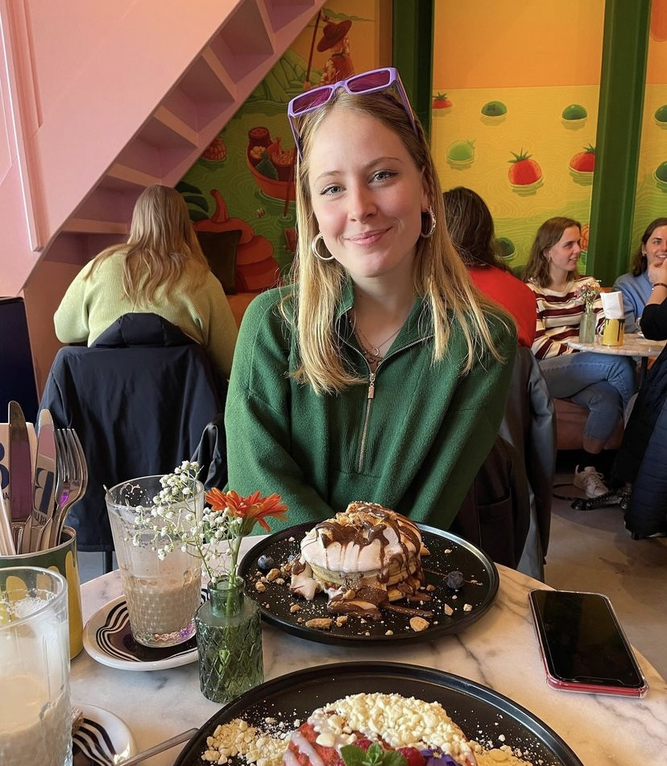

Als grafisch ontwerper werk ik graag aan heldere visuele verhalen.
Mijn interesse ligt bij culturele organisaties, natuurprojecten en maatschappelijke initiatieven, waar inhoud en vorm echt samenkomen.
In mijn werk vertaal ik complexe ideeën naar rustige, toegankelijke beelden, met veel aandacht voor typografie, illustratie en detail.
Voor mij is het belangrijk dat ontwerp niet alleen mooi is, maar ook iets vertelt en betekenis heeft.